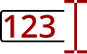

Automatic Renumbering
1. After the new points are generated, notice that segment B is now numbered out of sequence, i.e. A07, B04, B05, and B01, B02. Fortunately, AutoPIPE provides a convenient tool for correcting this. Select Home > Operations > Renumber All Points.